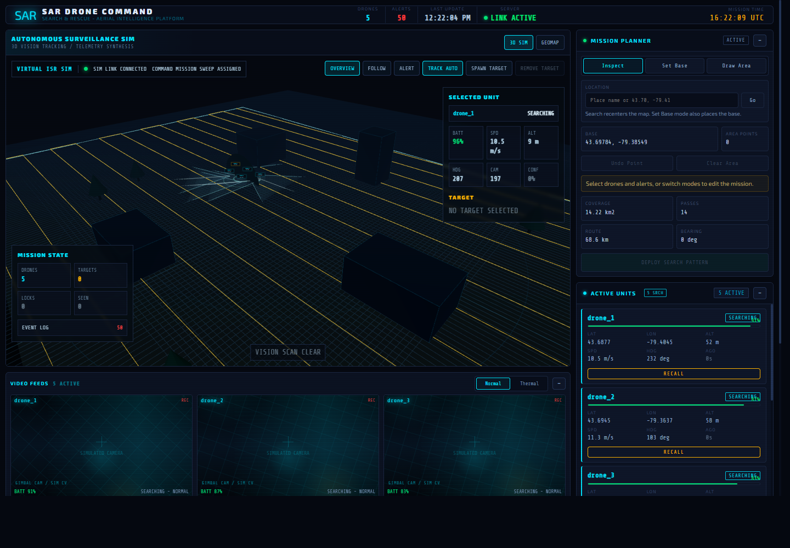
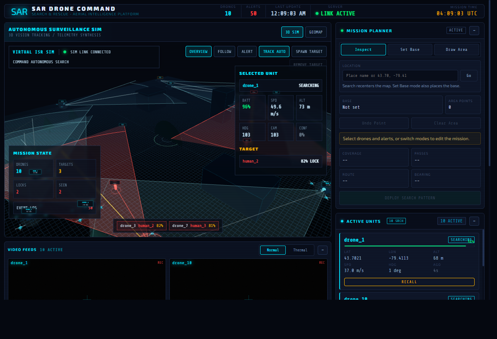
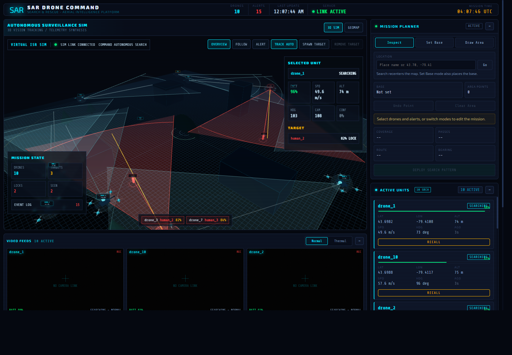

Search & rescue · autonomous aerial detection
Find people from the air, in real time.
A drone command system that pairs on-device AI person detection with live flight telemetry and a mission dashboard — so a ground team gets a GPS-tagged alert the moment a camera sees someone, not after the footage is reviewed.
Live detection over real aerial search-and-rescue footage — not a simulated render.
Raspberry Pi–class drone nodes run person detection on-device, drive the flight controller over MAVLink, and stream video and telemetry to a command dashboard. An operator draws a search area, deploys a sweep, and watches alerts land on the map as the AI finds people — every detection stays human-verified before any action is taken.
How it fits together
Drone node
Camera + thermal
On-device AI detector
MAVLink flight control
Backend relay
WebSocket server
Drone + alert state
Command dashboard
Live map + video overlay
Mission sweep planner
| Message | Direction | Purpose |
|---|---|---|
| telemetry_update | drone → dashboard | Position, battery, status, video |
| alert_event | drone → dashboard | Person detection, GPS + confidence |
| detection_frame | drone → dashboard | Annotated frame with bounding boxes |
| mission_plan_update | dashboard → drone | Search area + sweep waypoints |
| recall_drone | dashboard → drone | Return to launch |
The operator's view
Live map, sensor feed, and detection markers in one screen — built for someone watching several drones at once, not reading logs.



From bench to airframe
-
01 — Bench prototype
Detection-to-dashboard pipeline on a desk — the phase this page shows.
-
02 — Multirotor testbed
Whole system airborne on a quadcopter — mission sweep, live detection, RTL recall, under supervision.
-
03 — VTOL fixed-wing
QuadPlane conversion, real thermal payload, 45+ minute endurance, night detection trials.
-
04 — Multi-drone & field trials
Coordinated sweep across drones, partnered field exercise with a SAR organization.